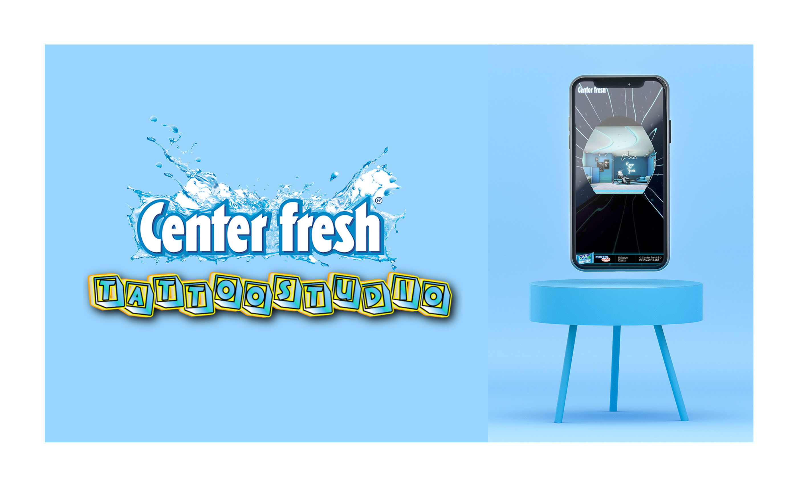
The Brief
Center Fresh isn't a niche product. It's Perfetti Van Melle's flagship in India — holding 31% of the chewing gum market with distribution across 3+ million retail outlets. When they show up at IIFA, they show up to make noise.
IIFA 2023 was held at Yas Island, Abu Dhabi — one of the most watched Bollywood events globally. Center Fresh commissioned Innovate Labs to build a digital experience that would capture that energy: something fans could interact with at the event and online, tied to a social campaign and a purchase mechanic.
I was handed the brief as a second-year CS student six weeks before launch. My job: design and build a browser-based 3D tattoo studio from scratch, rig a guide character, wire a registration backend, and ship something a global brand would put their logo on.
The Real Problem
How do you build an immersive 3D experience that runs on a 3-year-old mid-range Android phone — held by someone standing in a noisy event hall — and still makes them want to stop and play?
How It Was Built
The constraint that shaped every decision: this had to be performant on mobile. That meant no real-time shadows, no ray casting, no expensive lighting passes. Everything visual had to be pre-baked or faked convincingly.
Discovery
Concept, moodboards, and environment sketches
3D Build
Modelling, UV unwrapping, and texture baking in Blender
Development
Three.js scene, Ramesh rigging, p5.js chat, backend wiring
Launch
QA, mobile optimisation, live at IIFA 2023
First Contact
The loading screen is the first impression. Most campaigns phone it in with a spinner. Ours opened with a branded cinematic frame — a dark void, floating 3D elements, the Center Fresh wordmark, and a single CTA. By the time a user tapped 'Move Ahead,' they were already inside the world.
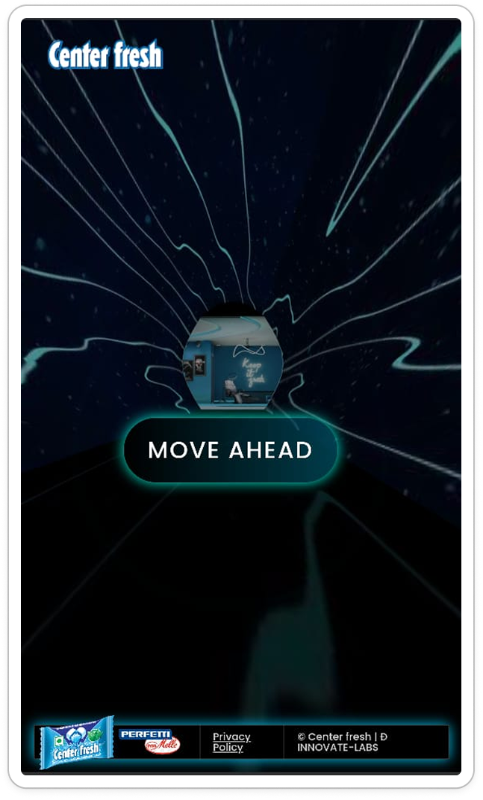
The Experience
Users enter a fully textured tattoo parlour — pan left and right, interact with objects, meet Ramesh, and eventually land at the Instagram filter chair. The entire environment is one Three.js scene. Every wall, shadow, and glow effect is pre-baked UV texture work. No real-time rendering. On a mid-range Android, it loads in under 4 seconds.
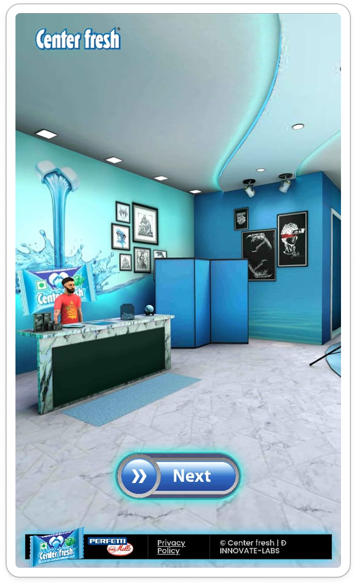
Entry View — Reception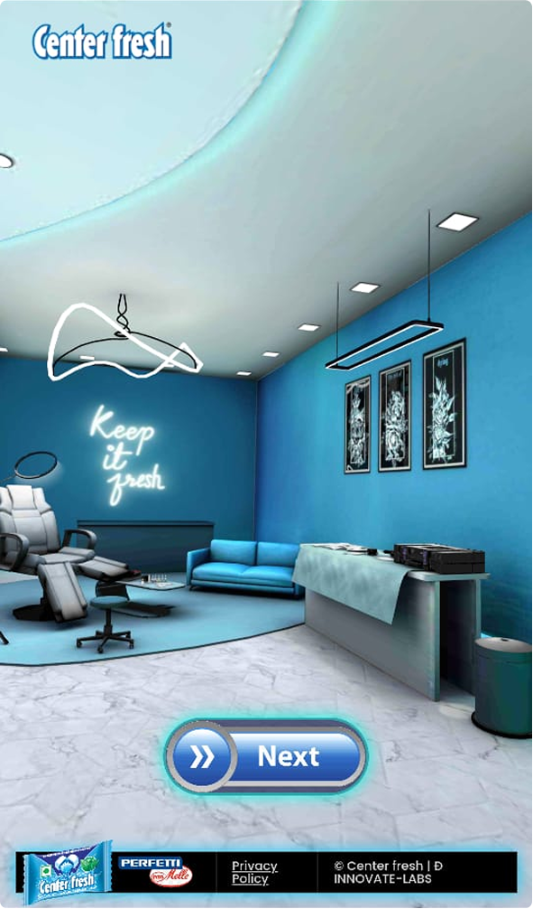
Full Room — Sofa & Neon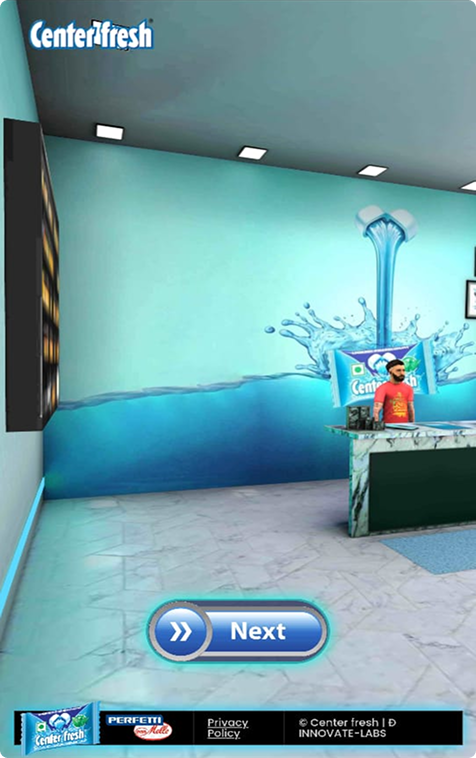
Counter Pan — Brand WallCharacter Design
Every campaign experience dies if users don't know what to do next. Ramesh was the answer. Fully designed and rigged in Blender, then rendered into the Three.js scene, he greets users the moment they land, walks them through the studio, explains the contest, and steers them toward the Instagram filter chair.
His chat bubble system was designed in Illustrator for maximum expressiveness and built with p5.js for smooth frame-perfect animation. The brief for his personality: friendly, slightly cheeky, unmistakably Indian — a face that felt at home at an IIFA afterparty.
Ramesh's primary metric was funnel progression: how many users he moved from entry to registration. That drove every line of his dialogue and every animation decision.
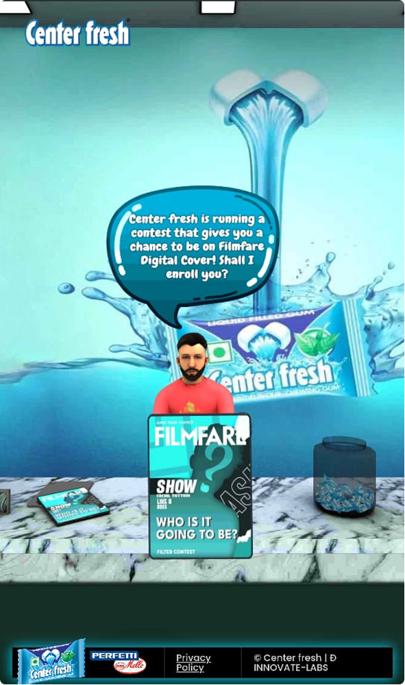
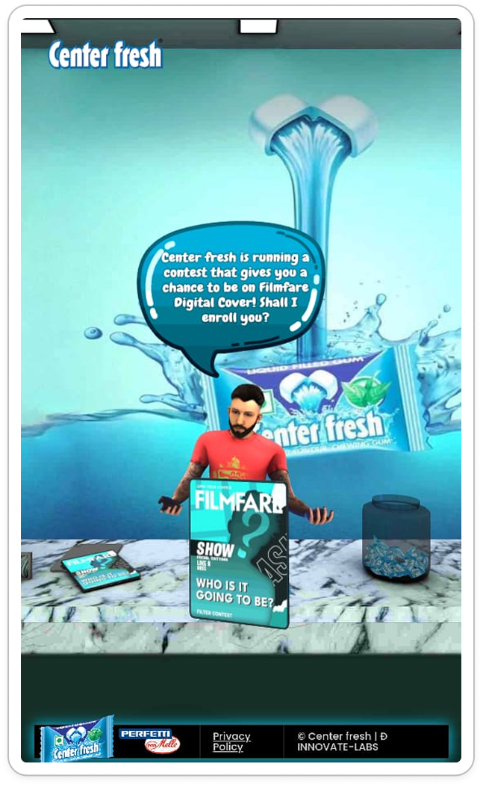
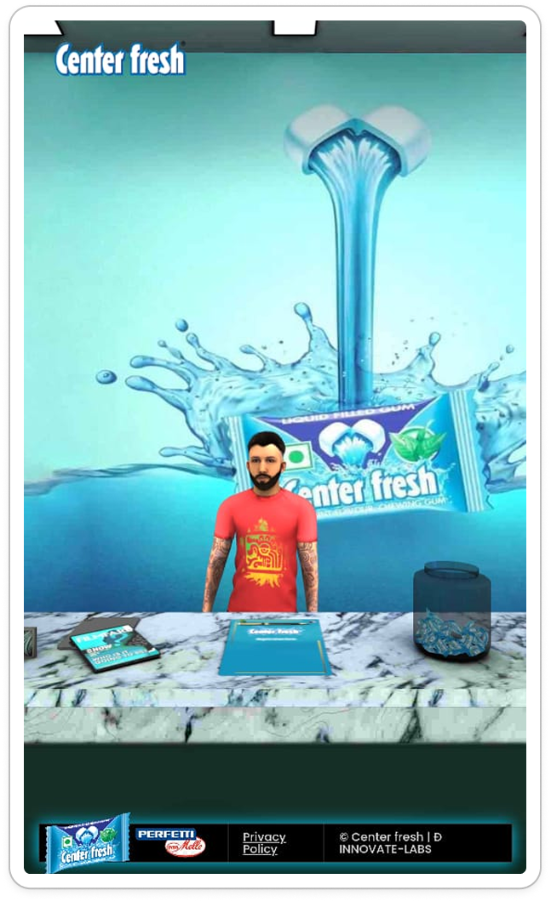
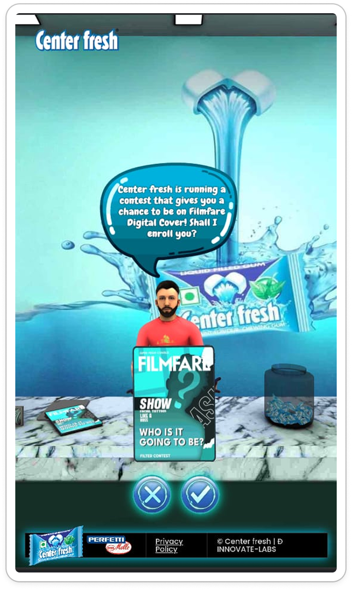
After Ramesh walked them through the studio, every user landed here — a fully branded in-scene registration form tied to the Filmfare Digital contest.
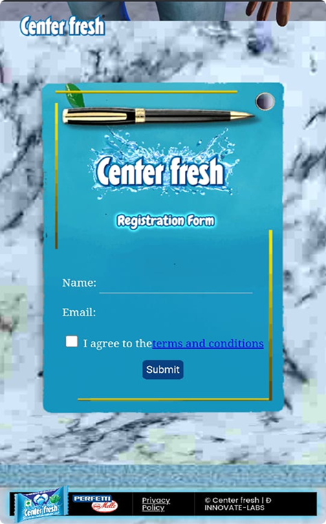
Technical Craft
The challenge wasn't making it look good in isolation — it was making it look good on the worst device in the room, with the slowest connection, with someone's arm in the way. Every technical decision was made through that lens.
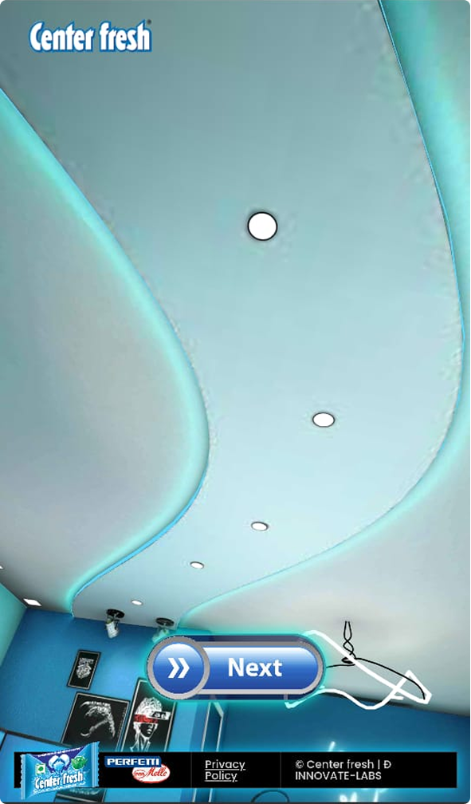
All shadows and ceiling glow pre-baked in Blender. The room looks fully lit without a single real-time light source — zero GPU overhead on mobile.
The "Keep it Fresh" sign looks like it emits light. It's a flat UV texture — no emission shader, no performance cost, just careful texture painting in Blender.
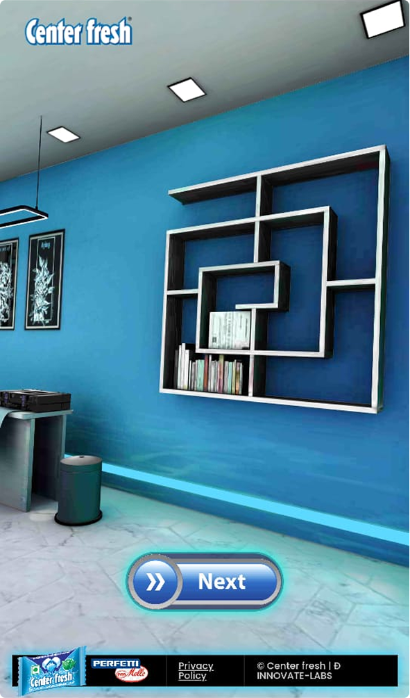
A flat wall texture shadow-augmented in Blender to read as a physical shelf at every viewing angle. No extra geometry. The brain fills in the rest.
Only the chandelier, sofa, tattoo chair, and counter are true 3D meshes — low-poly, every polygon justified. Everything else is baked texture work.
Results
The experience launched alongside IIFA 2023 at Yas Island. Center Fresh put it in front of their full digital audience — and the numbers reflected that a 6-week build from a 2-person team had done something worth noticing.